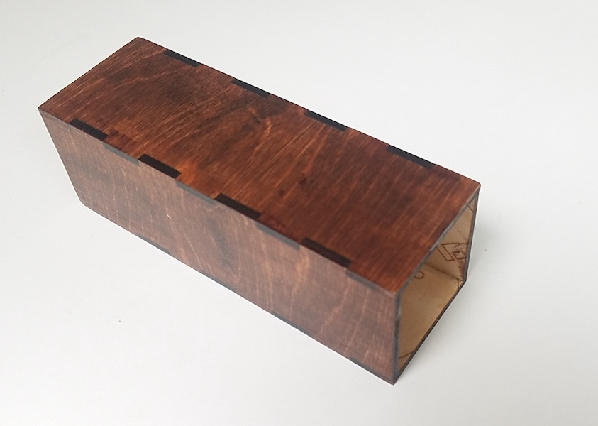
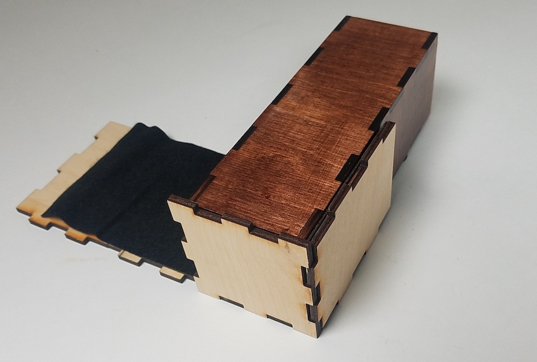
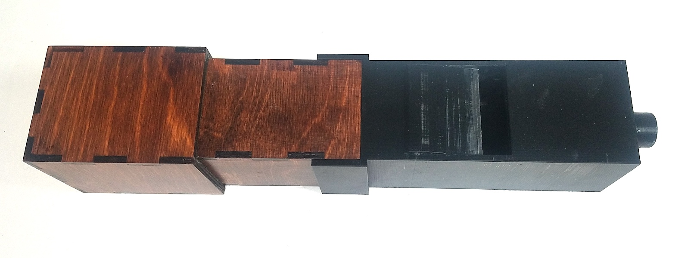
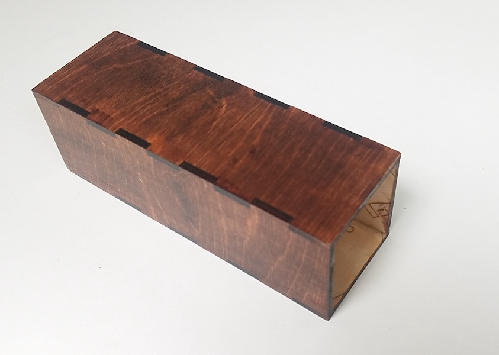
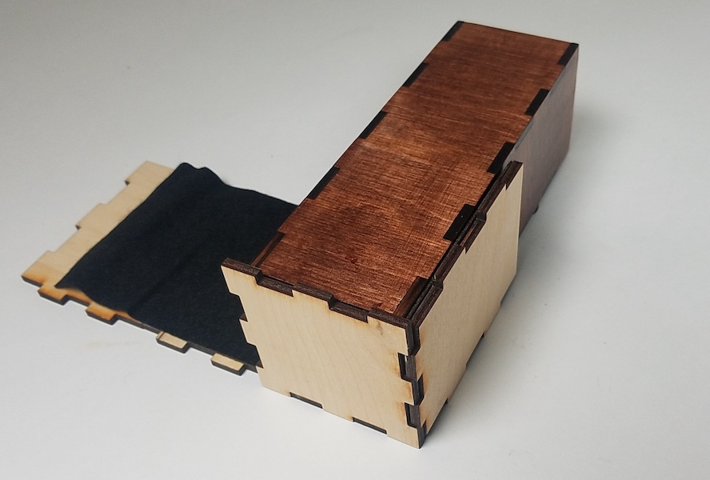
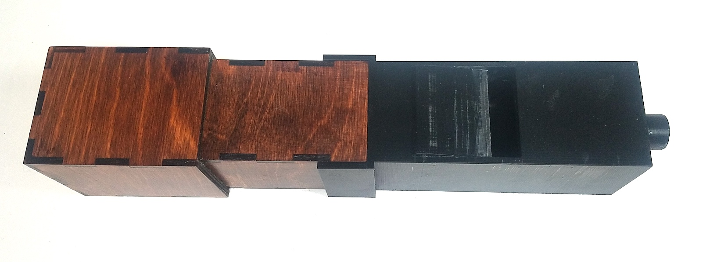

×
What Is This?
This page makes organ pipes. You can enter some information about the pitch and timbre of the pipe you want. It creates files that you can download and use to quickly fabricate real organ pipes! The bottom 'mouth' part of the pipe will be in a .stl file that can be 3d-printed, and the top 'resonator' part of the pipe will be in a .svg file that can be laser-cut out of plywood and felt. The pipes will always be square (just like most real organ pipes), and will have a tuning slide that fits over the top of the pipe for tuning. For stopped pipes, the tuning slide will be closed, for open pipes it is open. Here is a little tutorial on how to build an organ pipe.
Download and 3d-print the mouth part of the pipe. More info is available in the '3d Print' help. Then download and laser-cut the resonator part of the pipe. More info is available in the 'Laser Cut' help. Use wood-glue to glue the four longest pieces together to form the resonator. After the glue is dry, sand and stain or paint the resonator. This is important, because it helps seal the joints. If the joints are not properly sealed, the pipe might not work well. I used an oil-based wood stain for color, and a water-based polyeurethane to seal everything.  The remaining pieces form the tuning slide. For the best fit, they should be assembled directly onto the resonator. This will involve simultaneously gluing the felt to the inside of the tuning slide using 3M Super 77 Spray Adhesive (or similar), and gluing all of the pieces of the resonator together into a rectangle (with a lid if the pipe is closed) using wood-glue. Clamp the whole assembly firmly to the resonator and allow it to dry, making sure the slide does not accidentally become stuck to the resontor.  After the tuning slide is fully assembled and the glue has dried, you can stain / paint it without removing it from the pipe.
The whole resonator assembly can then be epoxied into the mouth using two-part Gorilla epoxy or similar. It is important that the entire joint be completely air-tight, especially in the front. A finished organ pipe is shown below. It is MIDI number 62 (D above middle C) and is closed at the top. 
Download and 3d-print the mouth part of the pipe. More info is available in the '3d Print' help. Then download and laser-cut the resonator part of the pipe. More info is available in the 'Laser Cut' help. Use wood-glue to glue the four longest pieces together to form the resonator. After the glue is dry, sand and stain or paint the resonator. This is important, because it helps seal the joints. If the joints are not properly sealed, the pipe might not work well. I used an oil-based wood stain for color, and a water-based polyeurethane to seal everything.  The remaining pieces form the tuning slide. For the best fit, they should be assembled directly onto the resonator. This will involve simultaneously gluing the felt to the inside of the tuning slide using 3M Super 77 Spray Adhesive (or similar), and gluing all of the pieces of the resonator together into a rectangle (with a lid if the pipe is closed) using wood-glue. Clamp the whole assembly firmly to the resonator and allow it to dry, making sure the slide does not accidentally become stuck to the resontor.  After the tuning slide is fully assembled and the glue has dried, you can stain / paint it without removing it from the pipe.
The whole resonator assembly can then be epoxied into the mouth using two-part Gorilla epoxy or similar. It is important that the entire joint be completely air-tight, especially in the front. A finished organ pipe is shown below. It is MIDI number 62 (D above middle C) and is closed at the top. 